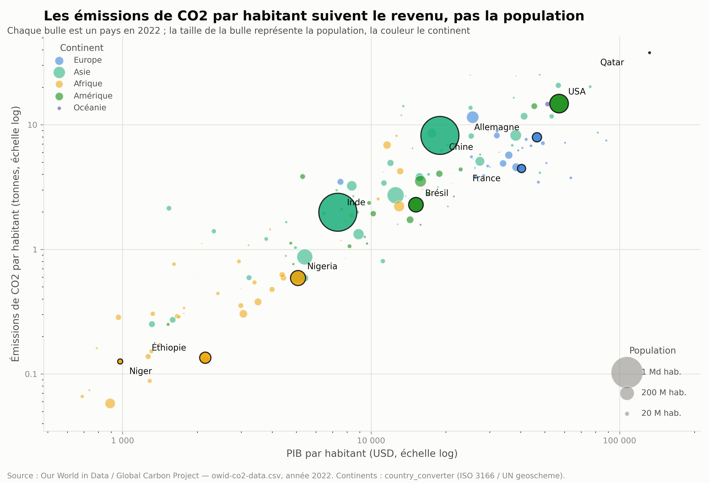
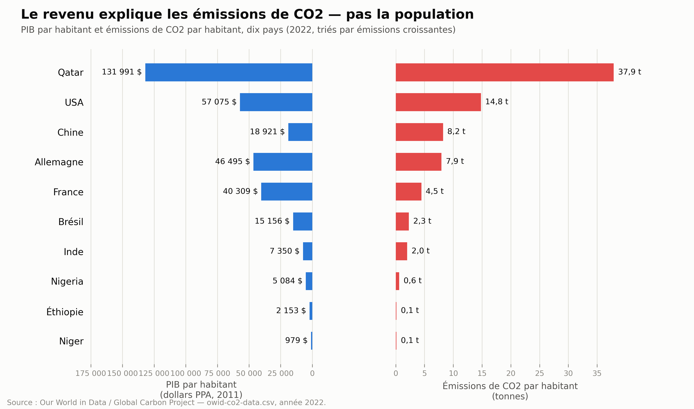

Ce qui explique l'empreinte carbone d'un pays
Donnees 2022
« Le vrai probleme climatique, c'est qu'on est trop nombreux sur Terre. » Cet argument revient souvent dans le debat public. Il deplace le regard vers la demographie des pays du Sud plutot que vers les modes de vie des pays riches.
On a regarde les chiffres : population, PIB par habitant et emissions de CO2 par habitant, pays par pays (Our World in Data / Global Carbon Project, 2022). Le resultat est net : ce qui predit l'empreinte carbone d'un pays, c'est son niveau de revenu — pas sa population.
Chaque bulle est un pays. Sa position horizontale est son PIB par habitant, sa position verticale ses emissions de CO2 par habitant, et sa taille sa population. Si la demographie expliquait les emissions, les grosses bulles (Inde, Nigeria, Chine) seraient en haut du graphique. Elles ne le sont pas : la position d'un pays suit une diagonale nette, du revenu vers les emissions.

Source : Our World in Data / Global Carbon Project — owid-co2-data.csv, 2022
Le nuage de points precedent montre la relation sur l'ensemble des pays, mais les valeurs precises sont difficiles a lire sur une echelle logarithmique. Voici dix pays representatifs, du plus pauvre au plus riche par habitant.

Source : Our World in Data / Global Carbon Project — owid-co2-data.csv, 2022
Ce graphique repond a une question precise : qui pollue le plus, par personne ? Ce n'est pas la meme question que « quel pays emet le plus en tonnage total ? ». L'Inde, avec 1,4 milliard d'habitants, emet plus de CO2 en tonnage brut que la France (67 millions d'habitants) — meme si chaque Indien emet, en moyenne, moins de la moitie de ce qu'emet chaque Francais.
Le PIB par habitant est aussi une moyenne nationale : elle masque les inegalites internes. Un individu riche en Inde ou au Nigeria a souvent une empreinte carbone comparable a un riche europeen ; un individu pauvre aux Etats-Unis emet beaucoup moins que la moyenne americaine.
| Pays | PIB/habitant (PPA $, 2011) | CO2/habitant (t) |
|---|---|---|
| Qatar | 131 991 | 37,9 |
| Etats-Unis | 57 075 | 14,8 |
| Chine | 18 921 | 8,2 |
| Allemagne | 46 495 | 7,9 |
| France | 40 309 | 4,5 |
| Bresil | 15 156 | 2,3 |
| Inde | 7 350 | 2,0 |
| Nigeria | 5 084 | 0,6 |
| Ethiopie | 2 153 | 0,1 |
| Niger | 979 | 0,1 |
Limites : une seule annee (correlation, pas trajectoire ni causalite) ; le CO2 mesure est territorial, pas l'empreinte de consommation (les pays qui delocalisent leur industrie lourde paraissent moins emetteurs qu'ils ne le sont en realite) ; les moyennes nationales masquent les inegalites internes.